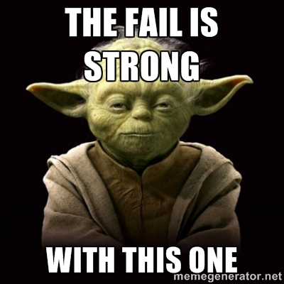
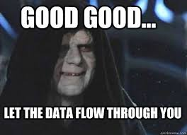

Data visualization and exploration
Synopsis
In this part of the workshop you will familiarize yourself with:
- R's basic plotting capabilities
- ggplot2, its syntax and fundamentals
- as well as some advanced data visualization
If you have questions ASK, feel free to drop me an e-mail also after the workshop.
Setting the stage
Plotting is a very personal thing (btw color schemes as well), ask three different people and you will get a variety of feedback with respect to plotting and data visualization in general. A lot of people get away with Excel, SigmaPlot, GraphPad, Matplotlib (if you are a Pythonista, which makes you a good person by default) or something else.
R as its parent S is a programming language primarily dedicated to data manipulation (in a good sense) and statistical analysis. Due to its modular architecture and the availabilitry of sophisticated libraries for data processing and plotting it is an excellent choice for any kind of data visualization.
When I got in touch with R the first time, I was googling options how to do a complex multi-panel figure. The original query was "plot facets vector graphics". If you do the exact same query now, you will end up with ggplot2 being the second hit. Yep, this is how I "met" R and years later I would still lie if I would say that I'm any sort of R expert. Most of me using R is still centered around the following dogma:
- Define the problem
- Look up necessary R resources
- Apply available examples to own data
- Be happy after A LOT of try and error.
Ok, first things first, fire up RStudio and check whether you have the following packages installed and load them. Throughout the course you can either execute commands from within a script (mark the respective lines of code and hit CTRL+ENTER) or directly in the console.
library("ggplot2")
library("dplyer")
library("tidyr")
library("ellipse")
library("RColorBrewer")
Ideally you should see no error message popping up, if you see any then you did not prepare properly for the workshop - shame on you, or rather me, because I did not tell you in time.

Basic plotting
Enough blabla, this session is about data visualization, where are the plots? Here they come. Create a new R script, type the following two lines and execute them:
dotchart(rnorm(250), col = "blue", main = "Quick ugly example")
hist(rnorm(250), col = "blue", main = "Quick ugly example II")
Alternatively type them one after another in the console.
Keep an eye on the plot window, what did just happen?
Question
- Try to figure out what the individual functions and parameters do.
First take home message of the day - the R help is your friend (a good one). The general syntax for calling R's help is:
?functionXYZ()
Let's start exploring R's basic plotting capabilities in a bit more detail, this is a bit of a recap of what you did yesterday.
# Let's define two arbitrary vectors
bacteria <- c(10, 30, 60, 5, 90)
archaea <- c(25, 27, 22, 37, 10)
# Plot them both
plot(bacteria, type="o", col = "orange")
lines(archaea, type="o", pch=22, lty=2, col = "blue")
axis(1, at=1:5, lab=(c("March","April","May","June","July")))
Let's say what we just plotted are relative abundances for archaea and bacteria across different months. But the output looks like garbage, apparently we had at first default x-axis labels, which were overwritten. The result is this "beauty" of a plot.
How to fix that, take a look at the following code:
plot(bacteria, type="o", col = "orange", axes=FALSE, ann = FALSE)
lines(archaea, type="o", pch=22, lty=2, col = "blue")
axis(1, at=1:5, lab=(c("March","April","May","June","July")))
Does that make it any better? What is now missing?
Exercise
- Call the help for axis(), box(), title(), and legend.
- Add a y-axis, a box around the plot, titles for the plot as well as the two axes, and a legend.
One possible solution:
plot(bacteria, type="o", col = "orange", axes=FALSE, xlab = "Month", ylab = "Rel. abundance [%]", main = "Bac and Arc")
lines(archaea, type="o", pch=22, lty=3, col = "blue")
axis(1, at=1:5, lab=(c("March","April","May","June","July")))
box()
axis(2, las = 2)
legend(1, max(bacteria), c("Bacteria", "Archaea"), cex=0.8, col=c("orange", "blue"),
pch=c(21,22), lty=c(1,3))
Alright, so far we played with a dataset that we quickly created, as you already learned before you can easily import datasets like this from any delimited file. Imagine a file like this (e.g. table.tsv):
| bacteria | archaea |
|---|---|
| 10 | 25 |
| 30 | 27 |
| 60 | 22 |
| 5 | 37 |
| 90 | 10 |
Two columns, tab-delimited, and the columns have names ("bacteria2, "archaea").
We could read this file as outlined below.
# Read the table, pay attention to the header and sep arguments
rel_prok <- read.table("table.tsv", header=T, sep="\t")
# Instead we merge our two vectors because you did a lot of importing yesterday...
rel_prok <- data.frame(bacteria, archaea)
colnames(rel_prok) <- c(bacteria, archaea)
# We define colors to be used with our data series, because why not
plot_colors <- c("blue", "orange")
# We initiate a PNG devide to save the output
png(filename="output.png", height=250, width=300, bg="white")
# AND NOW?!
# Adapt your code
# and end it with
dev.off()
# to turn off the PNG device
Exercise
- Plot the data as before, and save the output as a .png.
- Do you have to adjust the dimensions?
- What is the dev.off() function doing?
Base R data visualization options
So far we basically only did line charts, base R provides us however with a whole range of different visualization options.
Let's take one of our vectors and see how we can create bar charts and how we can visualize both data series by dot charts.
Bar charts:
bacteria <- c(10, 30, 60, 5, 90)
# A simple bar plot
barplot(bacteria, main="Bacteria relative abundance", xlab="Month",
ylab="Rel. abundance [%]", names.arg=c("March","April","May","June","July"))
# Simple, and slightly pimped, pattern fill
barplot(bacteria, main="Bacteria relative abundance", xlab="Month",
ylab="Rel. abundance [%]", names.arg=c("March","April","May","June","July"),
border="gray", density=c(10,20,30,40,50))
# Add a box around the plot because we like boxes
box()
# This time with colors
barplot(bacteria, main="Bacteria relative abundance", xlab="Month",
ylab="Rel. abundance [%]", names.arg=c("March","April","May","June","July"),
col=rainbow(5))
And a dot chart:
# Plot the dotchart
dotchart(t(rel_prok), color=c("blue", "red"), main="Dotchart Bacteria and Archaea")
We finish this first session with a little exercise.
Exercise
Use the simple dataset to plot a grouped bar chart incl. a legend and a dot chart with months as row names. Export both as .png files. NOT using RStudio's export function.
For more examples of using the plotting capabilities of base R have a look for instance here.
Solutions:
# Grouped bar chart
barplot(as.matrix(rel_prok), main="Bac vs Arc", ylab= "Rel. abundance",
beside=TRUE, col=rainbow(5))
box()
# Place the legend at the top-left corner with no frame
# using rainbow colors
legend("topleft", c("March","April","May","June","July"), cex=1,
bty="n", fill=rainbow(5))
# Dot chart with months as labels
row.names(rel_prok) <- c("March","April","May","June","July")
rel_prok
dotchart(t(rel_prok), color=c("blue", "red"), main="Dotchart Bacteria and Archaea", cex = 1)
Basic usage of ggplot2
ggplot2
Base R's plotting capabilities are not bad, but the bottom line is, even with a lot of tweaking the resulting plots are visually rather less appealing. When you are dealing with your data, you want to present it in the best possible/convincing way. Often when I read papers and I see mediocre figures I think one thing, namely: "RESPECT YOUR DATA!". Investing time in in proper plotting/visualization/beautifying is usually more than worth it as it pays off in multiple regards.
Luckily, there are a multitude of R packages that provide us with almost unlimited options of data visualization. The most common one is ggplot2, which was created and is maintained by Hadley Wickham. Hadley is incredibly active in the R scene and maintains a lot of popular R packages/tools including:
- dplyr
- tidyr
- stringr
- ggplot2
to name a few. He is also one of the main persons behind RStudio.
ggplot2 versus base R
Plotting in base R can be mostly done using data stored in vectors. In comparison, ggplot2 relies on dataframes. Let's have a look at one of these as a quick reminder:
data(mtcars)
head(mtcars)
mpg cyl disp hp drat wt qsec vs am gear carb
Mazda RX4 21.0 6 160 110 3.90 2.620 16.46 0 1 4 4
Mazda RX4 Wag 21.0 6 160 110 3.90 2.875 17.02 0 1 4 4
Datsun 710 22.8 4 108 93 3.85 2.320 18.61 1 1 4 1
Hornet 4 Drive 21.4 6 258 110 3.08 3.215 19.44 1 0 3 1
Hornet Sportabout 18.7 8 360 175 3.15 3.440 17.02 0 0 3 2
Valiant 18.1 6 225 105 2.76 3.460 20.22 1 0 3 1
Dataframes are nothing else but lists of vectors of equal lengths. It we take a qick look at our workshop mock data, are we dealing with a dataframe as well?
aqd_mock <- read.table("simulated_dataset.txt", header=T, sep="\t", row.names = "SampleID")
head(aqd_mock)
Well Month Season Cluster Zone Aquifer TEMP_W_ES EC EC25 PH DO NH4 PO4 DOC TOC TIC NO3 SO4 Cl Ca
Sample1 H41 Mar Spring 2 HTL HTL 4.4 455 113.7800 7.41 6.41 0.0 0.4 1.3 1.3 36.81 24.34 21.86 5.6 34.7
Sample2 H41 Jun Summer 2 HTL HTL 4.5 465 113.2046 8.21 5.50 0.1 0.1 1.1 1.2 37.45 19.29 15.33 5.8 33.7
Sample3 H41 Aug Summer 2 HTL HTL 4.7 444 108.1701 7.31 3.71 0.2 0.9 1.7 1.8 32.23 12.98 19.24 5.6 30.9
Sample4 H41 Nov Autumn 2 HTL HTL 4.8 449 110.1839 7.31 3.20 0.2 0.1 1.5 1.7 35.84 12.04 16.49 5.7 30.3
Sample5 H41 Feb Winter 2 HTL HTL 3.9 457 115.9376 7.21 6.99 0.0 1.1 0.7 0.8 34.27 23.79 26.22 5.9 35.4
Sample6 H41 May Spring 2 HTL HTL 4.8 477 116.3691 7.31 7.83 0.0 2.4 0.7 0.7 35.37 26.71 23.91 5.6 36.0
Fe Mg Mn Na
Sample1 0.0 23.17 0.00 3.0
Sample2 0.0 24.51 0.00 2.0
Sample3 5.2 29.54 0.35 3.5
Sample4 1.4 29.00 0.34 3.3
Sample5 6.0 23.90 0.09 3.5
Sample6 2.7 21.95 0.09 1.6
Apparently we do. BTW:
Question
- Why do we add the "header" and "row.names" parameters?
Besides from the usage of dataframes, the second key characteristics of ggplot2 is that you work with layers. Basically, every ggplot2 object is like a canvas and we keep painting on it by adding layers, aka geoms.
library("ggplot2")
# Initialize a ggplot object
ggplot(aqd_mock, aes(x=Zone, y=Fe))
Thats our canvas, and yes so far it is fairly empty. We have to fill it by adding the aforementioned geom objects, before we take a look at the overall ggplot2 syntax.
ggplot(
data = <some_data_frame>,
mapping = aes(
x = <some_column>,
y = <some_other_column>,
random aesthetics = <based_on_a_random_parameter>
)
) +
geom_<some_plot_type>()
Now we add some content.
ggplot(aqd_mock, aes(x=Zone, y=Fe)) + geom_point()
We just created our first ggplot2 plot. Whoa.
Basic customizations / a bit about aesthetics
Lets be more serios, our dataset spans data from different seasons. One obvious question is whether we can identify differences over the year? Let's find out and color our dots according to season.
# A touch of color
ggplot(aqd_mock, aes(x=Well, y=Fe, col = Season)) + geom_point()
We can use this simple example to learn more about how ggplot2 aesthetics work.
ggplot(aqd_mock, aes(x=Zone, y=Fe)) + geom_point(aes(col = Season))
ggplot(aqd_mock, aes(x=Zone, y=Fe, col = Season)) + geom_point(colour = "Black")
# Why does the following not work?
ggplot(aqd_mock, aes(x=Zone, y=Fe, col = Season)) + geom_point(aes(col = "Black"))
# A second variable to modify aesthetics
ggplot(aqd_mock, aes(x=Zone, y=Fe)) + geom_point(aes(col = Season, shape = Well))
# That does not make so much sense hm?
ggplot(aqd_mock, aes(x=Zone, y=Fe)) + geom_point(aes(col = Season, shape = Aquifer))
ggplot(aqd_mock, aes(x=Zone, y=Fe)) + geom_point(aes(fill = Season, shape = factor(Aquifer), alpha = .6, size = 5), colour = "Black") + scale_shape_manual(values=c(21,22))
# Getting rid of some legends
ggplot(aqd_mock, aes(x=Zone, y=Fe)) + geom_point(aes(fill = Season, shape = factor(Aquifer), alpha = .6, size = 5), colour = "Black") + scale_shape_manual(values=c(21,22)) + guides(size = FALSE, alpha = FALSE)
# Success
Ah well, so far nothing really obvious, however right now it is really hard to tell. Let's try to visualize this better.
Exercise
- Check out geom_boxplot() via ?geom_boxplot()
- Plot box plots combined with dot plots for the Fe content at the different wells, using the season as grouping.
- Try out geom_violin() as well.
Does that that help, do we see differences across season now?
# A first boxplot
ggplot(aqd_mock, aes(x=Well, y=Fe)) + geom_boxplot(alpha = .6) +
geom_point(aes(fill=Season ,size = 5, shape = factor(Aquifer), alpha = .6), colour = "Black", position = position_jitterdodge()) + scale_shape_manual(values=c(21,22)) + guides(size = FALSE, alpha = FALSE)
# And now grouped
ggplot(aqd_mock, aes(x=Well, y=Fe)) + geom_boxplot(aes(fill = factor(Season), alpha = .6)) +
geom_point(aes(fill=Season ,size = 5, shape = factor(Aquifer), alpha = .6), colour = "Black", position = position_jitterdodge()) + scale_shape_manual(values=c(21,22)) + guides(size = FALSE, alpha = FALSE, fill=guide_legend(title="Season"), shape = guide_legend(title="Aquifer"))
Question
- What is the parameter "position" good for?
In the beginning we talked about pretty figures, I do not know about you, but I strongly dislike the default ggplot2 theme (you should as well). How can we get rid of this grey background and white gridlines?
last_plot() + theme_bw() + theme(panel.grid.major = element_blank(), panel.grid.minor = element_blank())
That is better, at least a bit. Now we want to add/modify in additon the title and the axis labels of the plot.
last_plot() + labs(title="AquaDiva mock data", subtitle="Iron content", y="Fe [mg/L]", x="Well", caption="(c) CEW")
Not bad, really not bad.
The last_plot() function is incredibly useful when you are continuously working on a figure. BUT, what do we see our seasons are not properly ordered. Even in a world of climate change, autumn is not before spring and summer. We covered that yesterday.
Exercise
- Fix the order of the seasons.
Here we go.
seasons <- ("Spring", "Summer", "Autumn", "Winter")
aqd_mock$Season = factor(aqd_mock$Season, levels = seasons)
Given that we have the package RColorBrewer loaded, we can also fairly easy manipulate the colors of our boxplot.
# Playing around with colors thanks to RColorBrewer
last_plot() + scale_fill_brewer(palette="Set1")
last_plot() + scale_fill_brewer(palette="Set2")
last_plot() + scale_fill_brewer(palette="Blues")
Facetting and wrapping
You have probably noticed that we are obviously dealing with a dataset that comprises a bunch of different variables.
Lets shortly talk about types of variables, what types come to your mind?
Some examples:
| Type | Description |
|---|---|
| categorical | variables that can be put in categories, e.g. male and female |
| discrete | variables that are limited to a certain number of values, e.g. grades in school |
| measurement | variables that can be measured and given a number, e.g. ... |
| ordinal | categorical variables that can be ordered, e.g. low, medium, high diversity |
| ranked | ordinal variables where every point can be ordered, e.g. OTU ranks |
Imagine the following scenario, we now know that there are differences across season for the Fe-content in the different wells. Now we want to do the same plot for all our measurement variables.

How do we do that?!
What we have to do is known as facetting. For that we can make use of two different ggplot2 functions, facet_wrap() and facet_grid(), with the differencing being the number of facetting dimensions. A quick example for facet_wrap():
# We load the ggplot2 dataset mtcars
data(mtcars)
# And do some wrapping
ggplot(data = mtcars, mapping = aes(x = hp, y = mpg)) + geom_point() + facet_wrap(~ cyl, scales = 'free_x')
And for facet_grip():
ggplot(data = mtcars, mapping = aes(x = hp, y = mpg)) + geom_point() + facet_grid(am ~ cyl, scales = 'free_x')
For detailed examples about facetting I recommend these links click me and me too.
All nice and well, but how do we apply that to our mock data?
head(aqd_mock)
We have a couple of rather descriptive variables (Well, Cluster, Zone, Aquifer) and a bunch of measurement variables (e.g. PH, DO, Na, TIC, TOC, DOC). So in principle what we want to do now is transform our data in a way that allows us to facet the data based on our measurement variables.
Here we go:
# We use the gather function
# Option (1)
aqd_long <- aqd_mock %>% gather(Parameter, value, TEMP_W_ES:Na)
head(aqd_long)
# Option (2)
aqd_long <- gather(aqd_mock, Parameter, value, TEMP_W_ES:Na)
head(aqd_long)
Question
Take a moment and try to figure out how gather() works. What is the role of the %>% operator?
head(aqd_long)
Well Month Season Cluster Zone Aquifer Parameter value
1 H41 Mar Spring 2 HTL HTL TEMP_W_ES 4.4000
2 H41 Jun Summer 2 HTL HTL TEMP_W_ES 4.5000
3 H41 Aug Summer 2 HTL HTL TEMP_W_ES 4.7000
4 H41 Nov Autumn 2 HTL HTL TEMP_W_ES 4.8000
5 H41 Feb Winter 2 HTL HTL TEMP_W_ES 3.9000
6 H41 May Spring 2 HTL HTL TEMP_W_ES 4.8000
7 H41 July Summer 2 HTL HTL TEMP_W_ES 5.1000
8 H41 Oct Autumn 2 HTL HTL TEMP_W_ES 4.8000
9 H41 Jan Winter 2 HTL HTL TEMP_W_ES 4.9000
10 H41 Apr Spring 2 HTL HTL TEMP_W_ES 4.8000
Our data was partially transformed into what is commonly known as long format. We can now use the transformed dataframe for facetting as before:
ggplot(aqd_long, aes(x = Well, y = value), xlab="") +
geom_point() +
labs(title="Dataset parameters") + theme(axis.text.x = element_text(angle = 25, hjust = 1)) +
facet_wrap(~Parameter)
That kind of worked, success with the facetting, but this plot needs some serious tweaking in terms of visual appeal.
Exercise
- Adjust the axis ranges by free scaling
- Add boxplots as you did before
- Use the black and white theme and get rid of the grid lines etc.
A potential solution could look as follows:
ggplot(aqd_long, aes(x=Well, y=value)) + geom_boxplot(aes(fill = Season)) +
geom_point(aes(fill = Season, alpha = 0.6, shape = factor(Aquifer)), colour = "Black", position = position_jitterdodge()) +
labs(title="Dataset parameters") + theme(axis.text.x=element_text(angle = 25, hjust = 1)) +
theme_bw() + theme(panel.grid.major = element_blank(), panel.grid.minor = element_blank()) +
facet_wrap(~Parameter, scales = "free") + ylab(label = "mg/L") +
guides(size = FALSE, alpha = FALSE, fill=guide_legend(title="Season"), shape = guide_legend(title="Aquifer")) +
scale_shape_manual(values=c(21,22))
Although we look at quite a number of parameters the figure does not look terribly messy. Let's filter the dataset anyway a bit. Imagine we are only interested in the following parameters:
- Fe
- TEMP_W_ES
Exercise
- Subset the data accordingly and re-do the plotting.
aqd_long_subset <- aqd_long[which(aqd_long$Parameter == c("Fe", "TEMP_W_ES")),]
Steps beyond
Going beyond the boxplot - correlation plots
One of the strong suits of ggplot2 is that it comprises numerous vizualization options, with dot plots and box plots being only two of them. And beyond that there are meanwhile a lot of R packages that stick to the ggplot2 syntax that expand R's plotting capabilities even more.
Ok, what we will try now is to get in a very simple way an idea whether our parameters are correlated with each other.
Quick reminder, part of our data is made up by descriptive variables. So first, we will extract only our measurement variables.
# What are the dimensions of our dataframe
dim(aqd_mock)
# Quickly check again which columns are containing descriptive variables
head(aqd_mock)
# Subset the dataframe accordingly
aqd_num <- aqd_mock[7:24]
Done. Now we calculate correlations between all measurement variables.
# Some more necessary R packages
library("ellipses")
library("RColorBrewer")
# Calculate correlations
aqd_cor = cor(aqd_num)
# A sneek peek at our correlations
aqd_cor
# We want to colorize our planned correlation plot, so lets create a palette
my_colors <- brewer.pal(5, "Spectral")
my_colors=colorRampPalette(my_colors)(100)
# Plot the plot ;-)
ord <- order(aqd_cor[1, ])
aqd_ord = aqd_cor[ord, ord]
plotcorr(aqd_ord , col=my_colors[data_ord*50+50] , mar=c(1,1,1,1) )
Oh hallo, that's pretty, what does it mean? Let's break up these lines.
# Calculate correlations
aqd_cor = cor(aqd_num)
Question
- What does cor() do?
That was an easy one. What about:
# We want to colorize our planned correlation plot, so lets create a palette
my_colors <- brewer.pal(5, "Spectral")
my_colors=colorRampPalette(my_colors)(100)
Question
- What is a palette?
- What do brewer.pal() and colorRampPalette() do?
# Plot the plot ;-)
ord <- order(aqd_cor[1, ])
aqd_ord = aqd_cor[ord, ord]
plotcorr(aqd_ord , col=my_colors[aqd_ord*50+50], type = "lower", diag = FALSE, numbers = TRUE , mar=c(1,1,1,1))
Exercise
- Take a moment and try to figure out what the figure shows you
Going beyond the boxplot while going back
Last but not least we want to take a look at interactive plots. Plots do not have to static, interactive plots allow us to dive into data into a much more engaging way.
Good, what we now try is to turn or facetted box plot into an interactive version.
Luckily, this is extremly easy.
p <- ggplot(aqd_long, aes(x=Well, y=value)) + geom_boxplot() +
geom_point(aes(fill = Season, alpha = 0.6, shape = factor(Aquifer)), colour = "Black", position = position_jitterdodge()) +
labs(title="Dataset parameters") + theme(axis.text.x=element_text(angle = 25, hjust = 1)) +
theme_bw() + theme(panel.grid.major = element_blank(), panel.grid.minor = element_blank()) +
facet_wrap(~Parameter, scales = "free") + ylab(label = "mg/L") +
guides(size = FALSE, alpha = FALSE, fill=guide_legend(title="Season"), shape = guide_legend(title="Aquifer")) +
scale_shape_manual(values=c(21,22))
p <- ggplotly(p)
p
You are now able to explore your data interactively in the viewer window of RStudio. For more ideas about interactive ggplot2 plots check out this link.
Exercise
Create interactive boxplots:
- For a single variable boxplot (e.g. Fe)
- And a subset
Written by Carl-Eric Wegner Oct 2018